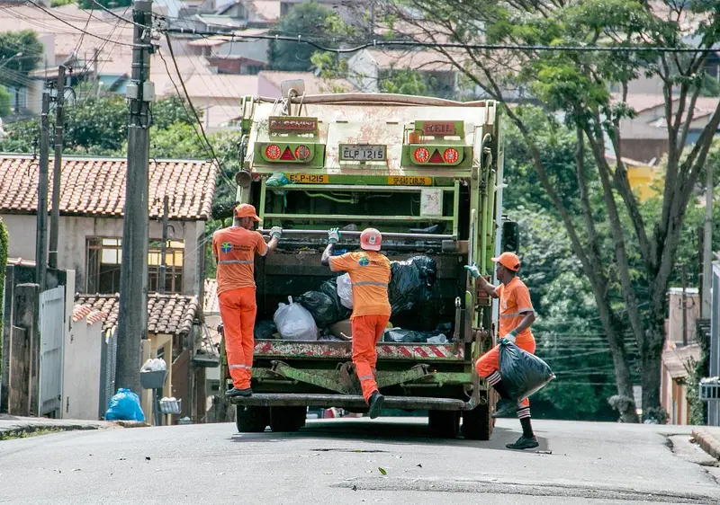

Missão
Educar o máximo de pessoas sobre práticas sustentáveis do dia a dia, facilitar o acesso a pontos de coleta de reciclagem e demonstrar o impacto coletivo dessas ações.
O portal EcoVida Urbana une educação ambiental, mudança de comportamento e inclusão social nas grandes cidades — para que hábitos sustentáveis caibam na rotina de todo mundo.

Foto: netkids / PixabayNossa história
Nas grandes cidades, o descarte incorreto de resíduos, o desperdício de água e o consumo excessivo de energia agravam problemas ambientais e sociais. O quadro piora onde há pouca coleta seletiva e pouca educação ambiental.
Grande parte da população não sabe onde descartar recicláveis nem como pequenas mudanças de hábito impactam o meio ambiente. O portal nasceu para aproximar essa informação da vida urbana — com linguagem clara, pontos de coleta em São Paulo e um convite à participação cidadã.
O que nos guia
Três compromissos simples: ensinar, indicar onde reciclar e mostrar que a ação coletiva já está em curso.
Educar o máximo de pessoas sobre práticas sustentáveis do dia a dia, facilitar o acesso a pontos de coleta de reciclagem e demonstrar o impacto coletivo dessas ações.
Cidades em que reciclar, economizar água e energia e participar de ações comunitárias sejam hábitos acessíveis a todas as pessoas, sem deixar ninguém de fora.
Publicamos conteúdo sobre reciclagem, consumo consciente e economia de água e energia, listamos pontos de coleta em São Paulo, exibimos um indicador ilustrativo de materiais coletados e divulgamos projetos e notícias socioambientais.
Agenda 2030 da ONU
Os Objetivos de Desenvolvimento Sustentável (ODS) são 17 metas globais que os países da ONU se comprometeram a alcançar até 2030. O portal contribui diretamente com cinco deles.
2,85%
do lixo recolhido na cidade de São Paulo em 2024 veio da coleta seletiva. A meta do plano municipal é de 10%.
Fonte: estudo da Faculdade de Saúde Pública da USP, divulgado pelo Brasil de Fato (jul. 2026).
8,7%
dos resíduos urbanos gerados no Brasil em 2024 foram enviados à reciclagem. Cada pessoa gerou, em média, 384 kg de lixo no ano.
Fonte: Abrema, Panorama dos Resíduos Sólidos no Brasil 2025, via Movimento Econômico.
40,3%
dos resíduos gerados no país em 2024 tiveram destinação inadequada, como lixões e aterros controlados.
Fonte: Abrema, Panorama dos Resíduos Sólidos no Brasil 2025.
ODS 6
Meta 6.4: aumentar a eficiência no uso da água.
No portal: dicas para economizar água em casa.
Ver dicas de economia de águaODS 7
Meta 7.3: melhorar a eficiência energética.
No portal: hábitos simples para gastar menos energia.
Ver dicas de economia de energiaODS 11
Meta 11.6: reduzir o impacto ambiental das cidades, com atenção à gestão de resíduos.
No portal: pontos de coleta, mutirões de limpeza e hortas comunitárias.
Conhecer os projetos nos bairrosODS 12
Meta 12.5: reduzir a geração de resíduos com prevenção, reciclagem e reúso.
No portal: como separar o lixo e feiras de troca e conserto.
Assistir ao vídeo sobre separação do lixoODS 13
Meta 13.3: melhorar a educação e a conscientização sobre o clima.
No portal: conteúdo educativo, podcast e mobilidade ativa.
Ouvir o podcast EcoVidaO que não abrimos mão
Cada decisão do portal — do texto ao peso das imagens — parte destes princípios.
Conteúdo aberto, em linguagem clara, para crianças, adolescentes e adultos — sem cadastro obrigatório e sem jargão que afasta.
Preferimos hábitos possíveis na semana: separar o lixo, economizar água, pedalar ou usar o transporte público — um passo de cada vez.
Navegação por teclado, leitores de tela e contraste adequado. Inclusão também fora da tela: pontos de coleta pensados para mais pessoas.
Números de impacto nesta entrega são ilustrativos e fixos — por exemplo, +5.000 pessoas engajadas e 128.430 kg reciclados. Dizemos isso com clareza, sem inflar resultados.
Hortas, mutirões e feiras solidárias só funcionam em grupo. O portal existe para aproximar vizinhos e iniciativas da cidade.
Site leve, CSS único, imagens otimizadas e sem JavaScript nesta etapa — para funcionar em celulares simples e conexões lentas.
UNICID · Front-End 2026
Quatro estudantes do Curso Superior de Informática, cada um com páginas e funções claras neste portal.
Coordenação, página inicial, CSS compartilhado, cabeçalho e rodapé.
Páginas Sobre, Projetos e Notícias, textos do portal e créditos das imagens.
Páginas Impacto, Acessibilidade e Galeria, conferência de acessibilidade.
Páginas Mídia, Contato e orçamento de hospedagem, formulário e multimídia.
Tire dúvidas, proponha uma parceria ou participe de uma ação. Também dá para acompanhar os números ilustrativos do impacto coletivo.